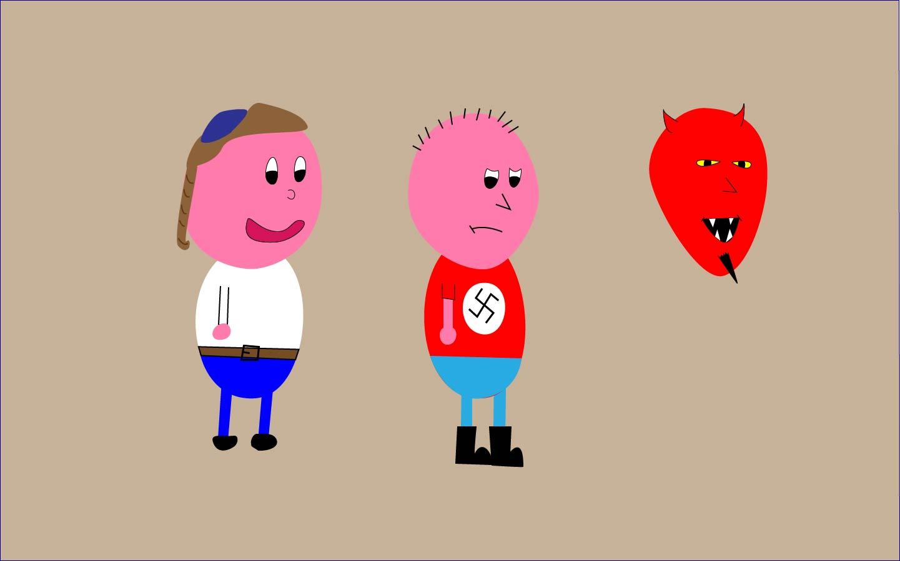
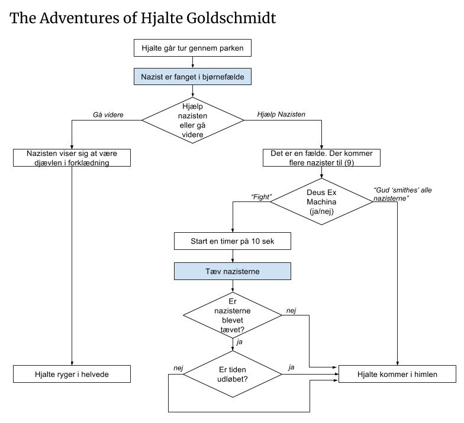

I dette spil ville man styre karakteren Hjalte. Hjalte, der er jøde bliver præsenteret for muligheden for at hjælpe en nynazist, der er fanget i en bjørnefælde. Disse to stereotyoiske karakterer er valgt med henblik på at sætte spilleren i en situation, hvor vedkomme umiddelbart vil være afvisende for at hjælpe.
 Som man kan se i historiestrukturen, så er det kun muligt at nå den 'dårlige' slutning ved det første valg, der træffes. Tanken er her at give illusionen om et valg, således at uanset om man klarer den timede udfordring, så kommer man i himlen, fordi man valgte at hjælpe et andet menneske.